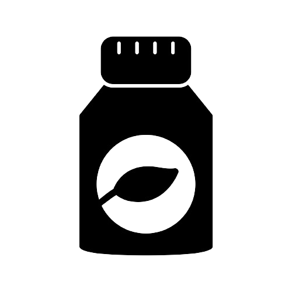

Often referred to as the master antioxidant," plays a pivotal role in the body's defense system and overall health its significance spans across numerous biological function, making it a vital molecule for various physiological processes. Understanding the importance of glutathione entails delving into its functions, benefits, and implications for human health.


GLUTATHIONE
The Importance of Glutathione for Health:
Disease Prevention
Adequate levels of glutathione are associated with a reduced risk of various chronic diseases, including cardiovascular conditions, neurodegenerative disorders, and certain cancers. It's antioxidant properties help mitigate the damage that can lead to these conditions.
Aging and Longevity
Glutathione levels tend decline with age. Restoring or maintaining optimal levels may support healthy aging and longevity by reducing oxidative stress and presserving cellular health.
Supporting Treatment Therapies
Glutathione supplemention is used in some medical treatment, such as supporting liver health in cases of liver disease of aiding in the management of certain neurological connditions.

Supporting Treatment Therapies
It has been suggested that higher levels of glutathione can improve exercise performance and aid in post-exercise recpvery by reducing oxidative stress and muscle fatigue.
The Role of Glutathione
- Antioxidant Defense: Glutathione serves as a powerful antioxidant, protecting cells from oxidative stress caused by free radicals. It neutralizes these harmful molecules, preventing cellular damage and supports overall health.
- Detoxification: It aids in detoxifying the body by binding to toxins, heavy metals and harmful substances, facilitating their elimination from cells and tissues. This detoxification process is crucial for maintaining optimal health and preventing disease.
- Immune Function: Glutathione plays as a fundamental role in supporting the immune system, enhancing the function of immune cells, helping the body fight infections and diseases more effectively.
- Cellular Health: It contributes to maintaining the integrity of cell structures and DNA, promoting healthy cellular function and preventing cellular damage.
Ways to Support Glutathione Levels
Diet
Consuming a diet rich in sulfur-containing foods like garlic, onions, cruciferous vegetables, and lean proteins can provide the building blocks for glutathione production.

Supplements
Some individuals opt for glutathione Supplements to support levels, although the effectiveness of oral supplementation in raising cellular glutathione levels is debated.
Lifestyle Factors
Getting adequate sleep, managing stress, regular exercise, and avoiding excessive alcohol consumption can help maintain healthy glutathione levels.
Conclusion
Glutathione stands as a crucial player in maintaining overall health and well-being. Its multifaceted roles in antioxidant defense, detoxification, immune support, and cellular health highlight its importance in preventing diseases and promoting longevity. Understanding and supporting optimal glutathione levels through lifestyle choices and, in some cases, supplementation can contribute significantly to enhancing one's health and vitality.